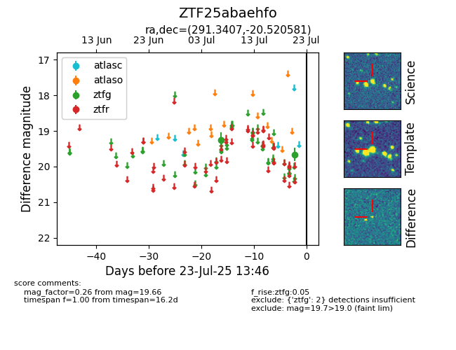

Target ZTF25abaehfo at 2025-07-23 13:46, see:
FINK: fink-portal.org/ZTF25abaehfo
Lasair: lasair-ztf.lsst.ac.uk/objects/ZTF25abaehfo
ALeRCE: alerce.online/object/ZTF25abaehfo
alt names
ZTF25abaehfo (ztf,fink)
coordinates:
equatorial (ra, dec) = (291.3407,-20.52058)
galactic (l, b) = (17.8861,-16.42580)
photometry
last ztfg=19.66
2 ztfg detections
